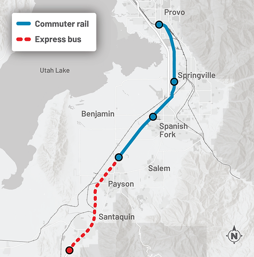

Proposed Solutions
There are only few solutions that have been proposed to address these issues. The first is to improve the Frontrunner commuter train. What is currently in place was only ever meant to get the so-called “foot-in-the-door” with commuters, a test-run to see if people would use the train, how many people would use it, to get feedback from the public about possible improvements, and to start getting long term infrastructure in place. For a few years now, there have been commissions created and studies completed to assess the future expansion of the train.
A few of the popular solutions include double tracking the entire length of track, if not only the more bottlenecked areas; increasing the frequency and capacity of trains; vanpooling from the Frontrunner stations directly to work locations; adding new stations along the current track as well as extending both north and south from the current track to attract a larger amount of people; and to increase the connections between Frontrunner stations and other forms of public transportation. There are a lot of ways to go about improving things as they stand right now, but although I think that many of these ideas are great, I don't think that these ideas go far enough.